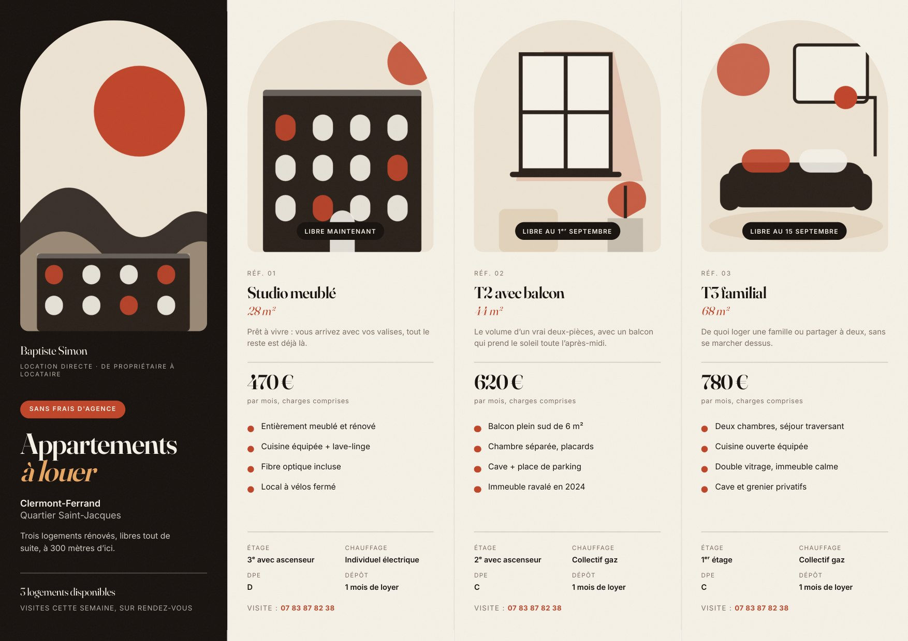
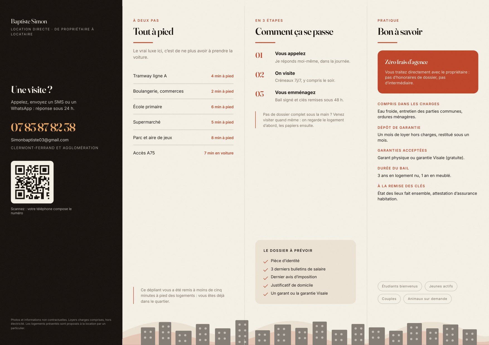
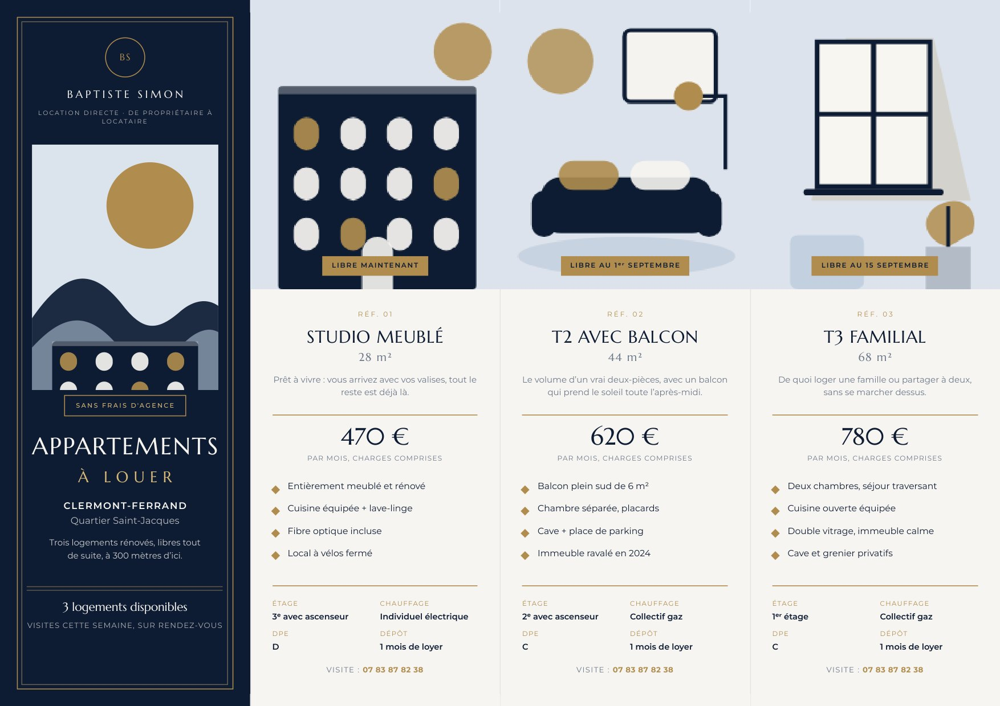
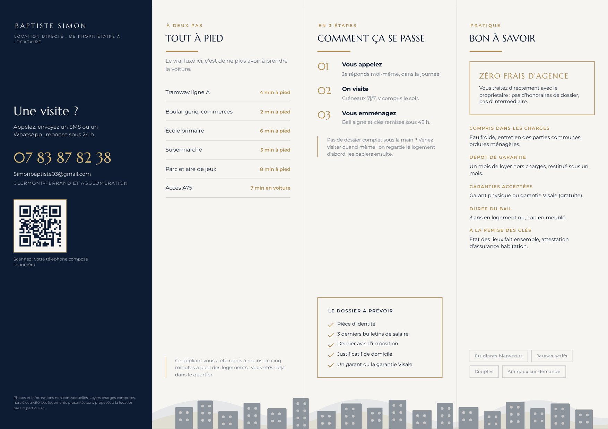
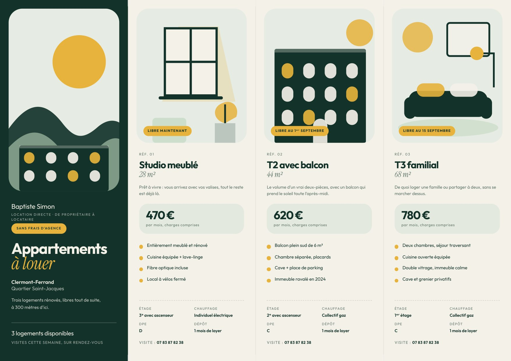
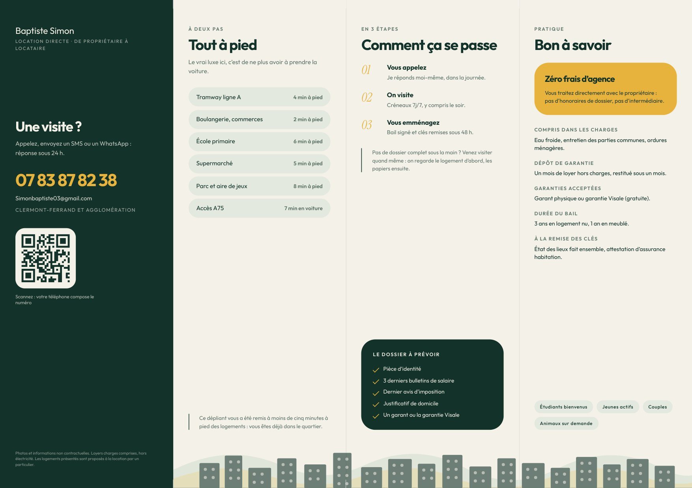

Même dépliant, même contenu : A4 paysage, quatre volets de 74,25 mm, pli accordéon. Recto : couverture + les trois logements. Verso : contact, quartier, démarche, informations pratiques.
Fichiers prêts à imprimer dans pdf/ ·
mode d'emploi dans README.md
Textes d'exemple. Loyers, surfaces, quartier et
temps de trajet sont fictifs. Modifiez contenu.py puis relancez
python3 build.py avant d'imprimer.
Éditorial et chaleureux. Craie, encre volcanique et terre cuite, grandes arches, serif expressif. Pour un propriétaire qui veut paraître soigné et humain plutôt que « agence ».


Codes de l'immobilier haut de gamme : bleu nuit, filets dorés, monogramme, capitales espacées, composition centrée. Rassure immédiatement, y compris un public plus âgé.


Vert profond, lin et jaune soleil, grands blocs arrondis, sans serif géométrique ponctué d'italiques. Lisible de loin, très actuel : parle aux étudiants, jeunes actifs et jeunes couples.

